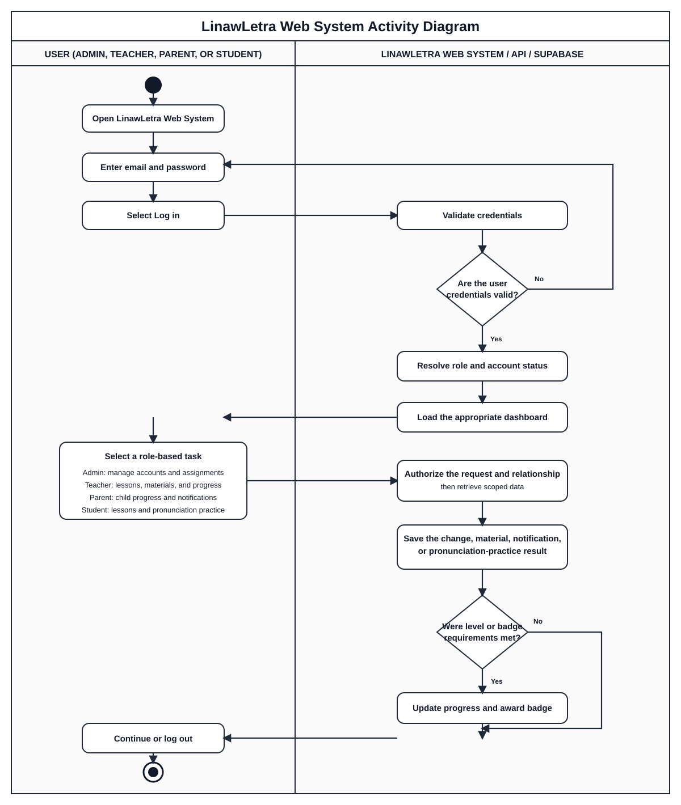

This chapter documents the implemented LinawLetra architecture. It is based on the React web application, React Native mobile application, Node.js/Express services, and Supabase schema/migrations. MongoDB is not used by the current implementation. Supabase provides PostgreSQL, Authentication, Row-Level Security (RLS), and object storage.
LinawLetra follows a three-layer architecture: the User Interface Layer, Application Logic Layer, and Data Storage Layer.
flowchart TB
subgraph UI[User Interface Layer]
WEB[React + TypeScript Web Application\nHostinger]
MOBILE[React Native Mobile Application]
end
subgraph LOGIC[Application Logic Layer]
API[Node.js + Express REST API\nRailway]
AUTHZ[Authentication, role and ownership checks]
SPEECH[Speech input, evaluation and TTS orchestration]
end
subgraph DATA[Data Storage Layer]
SA[Supabase Auth]
DB[(Supabase PostgreSQL + RLS)]
STORE[Supabase Storage]
end
EXTERNAL[External services\nGoogle Text-to-Speech, email delivery]
WEB -->|HTTPS REST API| API
MOBILE -->|HTTPS REST API| API
API --> AUTHZ --> SA
API --> DB
API --> STORE
API --> SPEECH --> EXTERNAL
The user interface layer presents the student, parent, teacher, and administrator dashboards. It collects input and displays results, but it does not contain service-role credentials and does not decide authorization. The application logic layer validates input, verifies bearer tokens, applies role and ownership rules, handles learning workflows, and returns safe API responses. The data storage layer persists identities, curriculum, practice results, progress, notifications, and files. RLS provides database-level isolation in addition to API authorization.
flowchart LR
Student([Student])
Parent([Parent])
Teacher([Teacher])
Admin([Administrator])
System[(LinawLetra)]
Student -->|Register/verify, log in/out| System
Student -->|Learn modules and lessons| System
Student -->|Practice pronunciation and hear TTS| System
Student -->|Complete Word of the Day, drills and assessments| System
Student -->|View progress, streaks, badges and notifications| System
Parent -->|Register/verify, log in/out| System
Parent -->|Enroll and manage child account| System
Parent -->|Monitor child progress and calendar| System
Parent -->|Read notifications and teacher messages| System
Parent -->|Initiate controlled child password reset| System
Teacher -->|Log in/out| System
Teacher -->|Manage assigned students| System
Teacher -->|Upload/manage lessons and PDF materials| System
Teacher -->|Create assignments and drills| System
Teacher -->|Monitor student progress and analytics| System
Teacher -->|Send messages| System
Admin -->|Log in/out| System
Admin -->|Manage users, roles and account status| System
Admin -->|Manage teacher grade assignments| System
Admin -->|View system analytics, archives and notifications| System
Admin -->|Review aggregate credential security status| System
The following consolidated activity diagram presents the principal dynamic workflow of the deployed LinawLetra web application. The swimlanes distinguish actions initiated by a user, interface processing, protected API processing, and persistence or external-service work. The role workspaces are intentionally grouped after authentication so that the diagram remains readable while still showing the implemented Admin, Teacher, Parent, and Student pathways.

flowchart LR
start((Start)) --> open[User opens LinawLetra web system]
subgraph USER[User: public, Admin, Teacher, Parent, or Student]
direction TB
choose{Existing account?}
register[Enter registration information]
otp[Enter received OTP]
login[Enter email and password]
forgot[Request password reset]
reset[Set a new password through verified reset flow]
retry[Correct information and try again]
select[Choose a dashboard action]
logout[Select Log out]
end
subgraph WEB[Web System: React web interface]
direction TB
registrationForm[Validate registration fields]
otpForm[Display OTP verification screen]
loginForm[Submit credentials securely]
error[Show safe validation or authentication error]
route[Load role-appropriate dashboard]
adminUI[Admin: manage users, roles, account status, grade assignments, analytics, archives and notices]
teacherUI[Teacher: manage roster, lessons, assignments, PDF materials, progress and messages]
parentUI[Parent: enroll/manage linked child, review progress, calendar, messages and notifications]
studentUI[Student: browse lessons, activities, Word of the Day and practice]
lesson[Open target word, sentence, lesson or activity]
listen[Optionally request text-to-speech]
speak[Provide microphone/speech input]
feedback[Display score, feedback, hints, progress and earned rewards]
continue{Continue another activity?}
end
subgraph API[Backend / REST API: Node.js and Express]
direction TB
pending[Create pending verification session]
verifyOTP[Verify OTP validity and expiry]
auth[Authenticate session and resolve role/account status]
authorize[Authorize requested role, ownership and relationship]
manage[Validate and apply permitted management request]
practice[Validate student, activity and speech/practice payload]
evaluate[Evaluate the submitted practice response]
update[Apply completion, level and badge rules]
signout[Invalidate/clear authenticated session]
end
subgraph DATA[Supabase / external services]
direction TB
email[Email delivery service sends OTP or reset link]
supaAuth[(Supabase Authentication)]
db[(PostgreSQL with RLS)]
storage[(Supabase Storage)]
tts[Google Cloud Text-to-Speech]
notify[Create scoped notification when applicable]
end
open --> choose
choose -- No --> register --> registrationForm --> pending --> supaAuth
pending --> email --> otpForm --> otp --> verifyOTP
verifyOTP --> validOTP{OTP valid and active?}
validOTP -- No --> error --> retry
retry --> register
validOTP -- Yes --> account[Complete account registration] --> login
choose -- Yes --> login
login --> loginForm --> auth --> supaAuth
auth --> validLogin{Credentials valid?}
validLogin -- No --> error --> login
login --> forgot --> email --> reset --> login
validLogin -- Yes --> active{Account active and role recognized?}
active -- No --> error --> login
active -- Yes --> route --> select
select --> adminUI --> authorize --> manage --> db --> route
manage --> notify --> db
select --> teacherUI --> authorize --> manage
teacherUI --> upload{Upload or manage material?}
upload -- Yes --> storage --> db
upload -- No --> db
select --> parentUI --> authorize --> db --> route
select --> studentUI --> lesson
lesson --> listen --> tts --> speak
lesson --> speak
speak --> practice --> authorize --> evaluate --> db
evaluate --> result{Required score achieved?}
result -- No --> feedback --> retryPractice{Practice again?}
retryPractice -- Yes --> lesson
retryPractice -- No --> route
result -- Yes --> update --> db
update --> nextLevel{Next-level requirements met?}
nextLevel -- Yes --> unlock[Unlock eligible level or activity] --> db
nextLevel -- No --> badges{Badge requirements met?}
unlock --> badges
badges -- Yes --> award[Create eligible badge award and XP] --> db
badges -- No --> feedback
award --> feedback --> continue
continue -- Yes --> studentUI
continue -- No --> route
route --> logout --> signout --> supaAuth --> finish((End))
#### Activity diagram explanation
The Web System Activity Diagram illustrates the dynamic workflow of the LinawLetra web application. A user can register through the OTP verification flow, sign in, recover credentials through the verified reset flow, and be routed according to the resolved account role. After the role and relationship checks, administrators manage authorized user and assignment records; teachers manage materials and monitor their assigned learners; parents access only linked-child information; and students select learning activities and submit pronunciation practice. The system validates each request, stores only authorized data through Supabase, optionally requests text-to-speech, evaluates practice results, updates progression, and awards eligible badges without duplication. Error, retry, authorization, performance, progression, and logout paths are explicitly represented.
flowchart TD
A[User opens registration] --> B[Enter account information]
B --> C{Input valid?}
C -- No --> D[Show validation message] --> B
C -- Yes --> E[Create pending account / OTP session]
E --> F[Send one-time verification code]
F --> G[User enters OTP]
G --> H{OTP valid and not expired?}
H -- No --> I[Show error or allow controlled resend] --> G
H -- Yes --> J[Confirm account and create authenticated session]
J --> K[Route user to role-appropriate dashboard]
flowchart TD
A[Open login] --> B[Enter credentials]
B --> C[Supabase Auth verifies credentials]
C --> D{Authenticated?}
D -- No --> E[Show safe error] --> B
D -- Yes --> F[Resolve user role and account status]
F --> G{Role authorized and active?}
G -- No --> H[Reject access / show account status]
G -- Yes --> I[Store session and load role dashboard]
I --> J[User selects sign out]
J --> K[Clear Supabase session]
K --> L[Return to public/login screen]
flowchart TD
A[Student opens practice content] --> B[Listen to target word using TTS]
B --> C[Speak into browser/mobile microphone]
C --> D[Speech recognition returns transcript]
D --> E[Validate transcript, content and authenticated student]
E --> F[Evaluate pronunciation accuracy/correctness]
F --> G[Save practice attempt]
G --> H[Update eligible progress/completion]
H --> I[Check badge rules]
I --> J[Show feedback, score, hints and unlocked badge]
flowchart TD
A[New completed/qualified attempt] --> B[Record content attempt]
B --> C[Check official completion requirements]
C --> D{Requirements satisfied?}
D -- Yes --> E[Create completion/progression record]
D -- No --> F[Keep current level]
E --> G[Evaluate badge criteria]
G --> H{Badge not previously awarded?}
H -- Yes --> I[Atomically create award and add XP]
H -- No --> J[Do not duplicate reward]
I --> K[Return updated progress and badge result]
F --> K
J --> K
flowchart TD
A[Teacher selects PDF/material] --> B[Validate teacher identity and ownership]
B --> C[Validate extension, MIME type, signature and size]
C --> D{Valid file?}
D -- No --> E[Reject and show safe validation error]
D -- Yes --> F[Upload object to storage]
F --> G[Save material metadata and legacy URL/path fields]
G --> H[Teacher publishes, drafts, assigns or archives material]
H --> I[Authorized students receive access through material rules]
flowchart TD
A[Teacher or parent opens progress view] --> B[Authenticate user]
B --> C[Verify teacher assignment or parent-child relationship]
C --> D{Authorized?}
D -- No --> E[Return 403 / no data]
D -- Yes --> F[Retrieve scoped attempts, progress and insights]
F --> G[Render charts, summaries and recommended support]
flowchart TD
A[System event or admin action] --> B[Create scoped notification]
B --> C[Recipient reads notification]
C --> D[Mark only own notification as read]
E[Admin opens user management] --> F[Authenticate admin role]
F --> G[Search/filter user]
G --> H[Disable, restore or archive with reason]
H --> I[Persist audit/status update and notify affected user where applicable]
The diagram focuses on principal entities observed in the available schema. Some historical mobile migrations contain compatibility tables; the deployed Supabase schema and [RLS audit](RLS_AUDIT.md) remain the authoritative operational reference.
erDiagram
USERS ||--o| PARENTS : has_profile
USERS ||--o| TEACHER_PROFILES : has_profile
PARENTS ||--o{ CHILDREN : manages
CHILDREN ||--o| CHILD_CREDENTIALS : has_metadata
CHILDREN ||--o| CHILD_PROGRESS : has_progress
TEACHER_PROFILES ||--o{ TEACHER_STUDENT_LINKS : assigned
CHILDREN ||--o{ TEACHER_STUDENT_LINKS : assigned_to
TEACHER_PROFILES ||--o{ PDF_MATERIALS : owns
PDF_MATERIALS ||--o{ PDF_ASSIGNMENTS : assigned_as
CHILDREN ||--o{ PDF_ASSIGNMENTS : receives
PDF_MATERIALS ||--o{ PDF_DRILL_ITEMS : contains
CHILDREN ||--o{ PDF_READING_ATTEMPTS : performs
PDF_DRILL_ITEMS ||--o{ PDF_READING_ATTEMPTS : evaluated_in
READING_CONTENT ||--o{ STUDENT_CONTENT_ATTEMPTS : attempted
CHILDREN ||--o{ STUDENT_CONTENT_ATTEMPTS : makes
READING_CONTENT ||--o{ STUDENT_CONTENT_COMPLETIONS : completed
CHILDREN ||--o{ STUDENT_CONTENT_COMPLETIONS : earns
CHILDREN ||--o{ PRONUNCIATION_PRACTICE_SESSIONS : practices
CHILDREN ||--o{ WORD_OF_DAY_LOG : completes
CHILDREN ||--o{ NOTIFICATIONS : receives
CHILDREN ||--o{ STUDENT_BADGE_AWARDS : earns
BADGES ||--o{ STUDENT_BADGE_AWARDS : awarded
TEACHER_PROFILES ||--o{ LESSONS : creates
CHILDREN ||--o{ LESSON_PROGRESS : tracks
users is the platform account identity, while parents and teacher_profiles provide role-specific profile information. children represents student records, links to a parent, and is associated with progress and optional credential metadata. Teacher-student links scope roster access. Learning is represented through reading content, attempts, completions, modules, lessons, PDF materials, assignments, drills, and pronunciation sessions. Badge awards are separated into a uniqueness-protected award table to prevent duplicate rewards. Notifications are scoped to their recipient.
Important supporting tables include reading_modules, reading_module_items, reading_module_assessments, student_module_assessment_attempts, student_module_assessment_responses, student_module_completions, lesson_progress, phoneme_confusion, student_nonsense_checks, teacher_messages, scheduled_activities, word_definitions, words, and settings tables. No raw password value belongs in the ERD output or documentation.
sequenceDiagram
actor U as User
participant W as Web/Mobile UI
participant A as Express API
participant S as Supabase Auth/DB
participant M as Email Provider
U->>W: Submit registration data
W->>A: POST registration request
A->>A: Validate input and role
A->>S: Create pending identity/OTP session
A->>M: Send OTP
M-->>U: Deliver verification code
U->>W: Submit OTP
W->>A: POST verification request
A->>S: Validate OTP and activate account
S-->>A: Verified identity
A-->>W: Auth/session result
W-->>U: Open role dashboard
sequenceDiagram
actor U as User
participant UI as Web/Mobile UI
participant SA as Supabase Auth
participant API as Express API
participant DB as Supabase PostgreSQL
U->>UI: Enter credentials
UI->>SA: Sign in
SA-->>UI: Access token/session
UI->>API: Authenticated dashboard request
API->>SA: Verify bearer token
API->>DB: Resolve role and scoped data
DB-->>API: Authorized data
API-->>UI: Safe response
UI-->>U: Display dashboard
sequenceDiagram
actor S as Student
participant UI as Web/Mobile UI
participant SR as Speech Recognition
participant API as Express API
participant DB as Supabase PostgreSQL/RPC
S->>UI: Start practice and speak
UI->>SR: Capture speech input
SR-->>UI: Transcript
UI->>API: Authenticated attempt/transcript request
API->>API: Validate student, content and input
API->>API: Evaluate accuracy/correctness
API->>DB: Record attempt and eligible completion
DB-->>API: Progression result
API->>DB: Check/atomically award eligible badges
DB-->>API: Newly awarded badge IDs
API-->>UI: Feedback, progress and badge result
UI-->>S: Show result and optional TTS guidance
sequenceDiagram
actor T as Teacher
participant UI as Teacher UI
participant API as Express API
participant DB as Supabase DB
participant ST as Supabase Storage
T->>UI: Choose PDF/material
UI->>API: Authenticated multipart upload
API->>API: Verify teacher and validate file
API->>ST: Upload validated file
ST-->>API: Storage path
API->>DB: Save material metadata
DB-->>API: Material ID
API-->>UI: Upload result
sequenceDiagram
actor P as Parent
participant UI as Parent UI
participant API as Express API
participant DB as Supabase DB/RLS
P->>UI: Select child progress
UI->>API: Authenticated progress request
API->>API: Verify parent-child ownership
API->>DB: Query child-scoped progress and attempts
DB-->>API: Authorized records
API-->>UI: Progress summary and insights
UI-->>P: Display child progress
flowchart LR
USER[Student / Parent / Teacher / Admin]
WEB[Browser\nReact web application\nHostinger]
MOBILE[Mobile device\nReact Native application]
API[Railway\nNode.js/Express REST API]
SUPA[Supabase Cloud\nAuth + PostgreSQL + RLS + Storage]
TTS[Google Cloud Text-to-Speech]
MAIL[Transactional email service]
USER -->|HTTPS| WEB
USER -->|HTTPS| MOBILE
WEB -->|HTTPS REST / JWT| API
MOBILE -->|HTTPS REST / JWT| API
API -->|TLS| SUPA
API -->|HTTPS| TTS
API -->|HTTPS| MAIL
The production web bundle is deployed to Hostinger and accessed through linawletra.com. The Express API is deployed to Railway and exposes authenticated HTTPS endpoints. Supabase hosts Auth, PostgreSQL, RLS policies, RPCs, and storage. The web and mobile clients communicate through the internet using HTTPS; service-role keys stay only in Railway/server environments. Google Cloud Text-to-Speech and the transactional email provider are external services called by the backend. CORS restricts browser origins, and security headers are applied at the API and Hostinger layers.